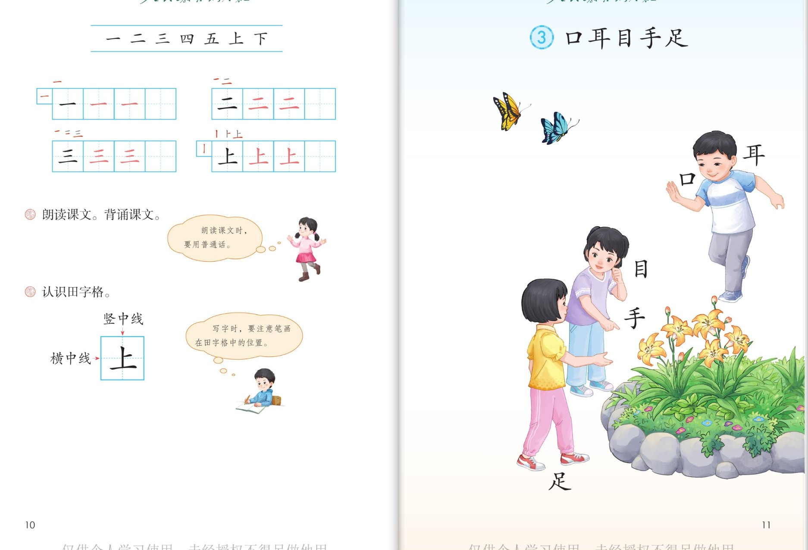

×
🔊 手机听不到声音怎么办？
① 先把手机
媒体音量调大
，确认没开静音、没连蓝牙耳机；在微信里打开的，点右上角「⋯ → 用浏览器打开」。
② 还是没声音？到应用商店免费下载
Microsoft Edge 浏览器
（它自带朗读发声），用它打开本页面就能出声。
③ 换了 Edge 仍然没声音，说明这部手机的
硬件/系统不支持
网页朗读（多为老旧机型）；近几年买的新手机一般都能正常播放。
→ 打开声音自检
统编版 · 一年级上册 · 第一单元 · 识字
第 3 课 · 口耳目手足
认一认身上的宝贝，读一读《站坐歌》
课本第 11~12 页，点哪个字听哪个字
会认 7 字
会写 4 字
背诵三步
闯关 8 题
第 1 课
天地人
第 2 课
金木水火土
第 3 课
口耳目手足
第 4 课
日月山川
这一课学什么：
五个身体宝贝——口、耳、目、手、足，还有坐立行卧的好姿势。 课本还问：
口、耳、目、手、足能做哪些事？
想一想，说一说。页面上的拼音按字典标注，供参考。
① 读一读
② 认一认
③ 写一写
④ 想一想
⑤ 闯关 8 题
课本原页
① 读一读 · 字和儿歌
课本第 11~12 页
点行听读
口
kǒu
耳
ěr
目
mù
手
shǒu
足
zú
站
zhàn
如
rú
松
sōng
，
坐
zuò
如
rú
钟
zhōng
。
行
xíng
如
rú
风
fēng
，
卧
wò
如
rú
弓
gōng
。
🎯 背诵三步
🔊 儿歌连起来读
第一步：
跟读，一句一句跟着读。
第二步：
看提示背（站……坐……行……卧……）。
第三步：
一边做动作一边背。
② 认一认 · 会认 7 个字
课本第 12 页拼音条
点字卡听读音和用途
③ 写一写 · 会写 4 个字
课本第 12 页田字格
口 耳 目 手（后一个为描红）
④ 想一想 · 说一说
课本问题 · 口、耳、目、手、足能做哪些事？
口能
说话
、
吃饭
；耳能
听故事
；目能
看书
；手能
写字
、
画画
；足能
走路
、
跑步
。
💡 课本就问了这一问题——照着上面的句子说，再说一件你自己的例子。
站坐歌是什么意思
站如松
：站着像小松树一样直；
坐如钟
：坐着像大钟一样稳；
行如风
：走路轻快；
卧如弓
：睡觉侧身像一张弓。
💡 “如”就是“好像”。读儿歌时可以做动作：站一站、坐一坐、走一走。
做一做：
上课
坐如钟
，排队
站如松
，走路
行如风
，睡觉
卧如弓
。好姿势，身体好。
⑤ 闯关 · 8 题
点题目可以听题，点选项就判对错，答完自动算分
已经答 0 题，答对 0 题。
课本原页 · 第 11~13 页
点图放大

第 11 页 · 口耳目手足
第 12~13 页 · 站坐儿歌 · 写一写 · 日月山川
🔊 读这一板块
▶️ 整页连读
⏹ 停
拼 拼音
← 学习中心